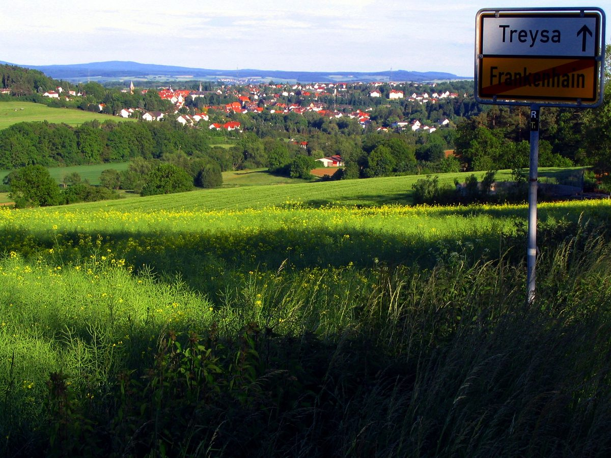

독일 슈발름-크뉠 에너지협동조합·에너지회사 EAM, 미헬스베르크에 태양광 7MW·배터리 2.5MW 착공…2027년 봄부터 약 2,000가구분

오랜 풍력 협력 이어 처음 함께 짓는 태양광+저장 단지, 약 400만 유로 투자에 조합원도 참여해 수익 나눠…농사에 덜 맞는 땅 약 8ha에 종다리 창 21곳·양 방목
독일 헤센주 슈발름슈타트(Schwalmstadt)의 슈발름-크뉠 에너지협동조합(Energiegenossenschaft Schwalm-Knüll eG)과 에너지회사 EAM 나투어 에네르기(EAM Natur Energie)가 이번 주 미헬스베르크(Michelsberg) 마을 근처에서 태양광·배터리 단지의 첫 삽을 떴다. 약 8ha 부지에 앞뒷면으로 빛을 받는 양면 모듈로 7MW 태양광을 짓고, EAM이 슈발름슈타트에 처음 들이는 메가와트급 저장장치인 2.5MW 배터리를 붙여 2027년 봄부터 약 2,000가구가 쓸 만큼의 전기를 생산할 계획이다. 투자비는 약 400만 유로이며, 협동조합 조합원은 사업에 참여해 발전 수익을 나눠 받을 수 있다. 두 곳은 오랜 협력 속에 이미 풍력발전기를 여럿 함께 세웠고, 태양광과 배터리를 함께 짓는 것은 이번이 처음이다. 사업은 땅 주인이 협동조합 이사에게 구상을 건네면서 시작돼 검토를 거쳐 2023년 처음 공개됐고, EAM 개발 담당자는 이 땅이 농사에는 질이 낮다고 설명했다. 단지 둘레에는 종다리가 둥지를 틀 수 있도록 씨를 뿌리지 않는 '종다리 창' 21곳과 남쪽 꽃밭, 숲 가장자리 띠를 남기고, 단지 안 풀은 양을 풀어 관리한다.
시민에너지 관점
약 400만 유로로 태양광 7MW와 배터리 2.5MW를 함께 짓는 이 단지는 지역 협동조합이 에너지회사와 나란히 사업 주체로 이름을 올리고 조합원이 수익을 나누는 구조로 출발했다. 태양광이 농지와 자연을 잠식한다는 우려에는 농사에 덜 맞는 땅을 고르고 종다리 창 21곳과 양 방목을 계획에 넣는 식으로 답했고, 땅 주인의 구상을 지역 협동조합이 먼저 받아 검토한 순서도 주민의 신뢰를 얻는 데 힘이 됐을 것으로 보인다. 다만 협동조합과 회사의 지분 비율, 조합원 참여 조건은 아직 알려지지 않았는데, 수익이 지역에 얼마나 남는지는 바로 이 숫자가 정한다. 국내에서도 지역 에너지 공기업이나 발전사가 태양광·저장 단지를 지을 때 주민 협동조합을 공동 사업자로 세우고, 지분과 참여 조건을 착공 전에 공개하도록 해야 한다.
출처: HNA 2026-10-29 Lisa Hartmann 원문 보기
ドイツのシュヴァルム・クニュル・エネルギー協同組合とエネルギー会社EAM、ミヒェルスベルクで太陽光7MW・蓄電池2.5MWを着工…2027年春から約2,000世帯分
長年の風力での協力に続き初めて共に建てる太陽光＋蓄電施設、約400万ユーロの投資に組合員も参加して収益を分配…農業に向かない約8haの土地にヒバリの窓21カ所・羊の放牧
ドイツ・ヘッセン州シュヴァルムシュタット（Schwalmstadt）のシュヴァルム・クニュル・エネルギー協同組合（Energiegenossenschaft Schwalm-Knüll eG）とエネルギー会社EAMナトゥーア・エネルギー（EAM Natur Energie）が今週、ミヒェルスベルク（Michelsberg）地区の近くで太陽光・蓄電池施設の鍬入れを行った。約8haの敷地に表裏両面で発電する両面モジュールで7MWの太陽光を建設し、EAMがシュヴァルムシュタットに初めて導入するメガワット級の蓄電設備である2.5MWの蓄電池を併設して、2027年春から約2,000世帯が使える量の電気を生み出す計画だ。投資額は約400万ユーロで、協同組合の組合員は事業に参加して発電収益の分配を受けられる。両者は長年の協力の中ですでに風力発電機を数多く共に建ててきたが、太陽光と蓄電池を組み合わせて建てるのは今回が初めてだ。事業は土地の所有者が協同組合の理事に構想を持ちかけたことから始まり、検討を経て2023年に初めて公表された。EAMの開発担当者は、この土地は農業には質が低いと説明した。施設の周囲にはヒバリが巣を作れるよう種をまかない「ヒバリの窓」21カ所と南側の花畑、森の縁の帯状の空間を残し、敷地内の草は羊を放牧して管理する。
市民エネルギーの視点
約400万ユーロで太陽光7MWと蓄電池2.5MWを共に建てるこの施設は、地域の協同組合がエネルギー会社と並んで事業主体に名を連ね、組合員が収益を分け合う構造で出発した。太陽光が農地や自然を侵食するとの懸念には、農業に向かない土地を選び、ヒバリの窓21カ所や羊の放牧を計画に組み込むことで応え、土地所有者の構想を地域の協同組合がまず受け止めて検討した順序も、住民の信頼を得る力になったとみられる。ただ、協同組合と会社の出資比率や組合員の参加条件はまだ明らかになっておらず、収益がどれだけ地域に残るかを決めるのはまさにこの数字だ。韓国でも地域のエネルギー公企業や発電会社が太陽光・蓄電施設を建てる際には、住民協同組合を共同事業者として迎え、出資比率と参加条件を着工前に公開するようにすべきだ。
出典: HNA（ヘッシッシェ／ニーダーザクセン・アルゲマイネ） 2026-10-29 リザ・ハルトマン（Lisa Hartmann） 原文を読む
德国施瓦尔姆-克努尔能源合作社与能源公司EAM在米歇尔斯贝格开工建设7MW光伏和2.5MW储能…2027年春起可供约2,000户用电
继多年风电合作后首次共建光伏加储能电站，投资约400万欧元，合作社社员也可参与并分享收益…在不太适合耕种的约8公顷土地上设21处云雀窗、放羊管理
德国黑森州施瓦尔姆施塔特（Schwalmstadt）的施瓦尔姆-克努尔能源合作社（Energiegenossenschaft Schwalm-Knüll eG）与能源公司EAM Natur Energie本周在米歇尔斯贝格（Michelsberg）附近为一座光伏加储能电站举行了象征性的奠基仪式。电站将在约8公顷的土地上用正反两面都能发电的双面组件建设7MW光伏，并配套2.5MW电池——这是EAM在施瓦尔姆施塔特建设的首个兆瓦级储能装置，计划从2027年春天起生产约可供2,000户家庭使用的电力。项目投资约400万欧元，合作社社员可以参与项目、分享发电收益。双方在多年合作中已经共同建设了多台风力发电机，这是首次一起建设光伏加电池项目。项目起源于土地所有者向合作社的一位理事提出构想，经过论证后于2023年首次公布；EAM的项目开发负责人表示，这块土地用于农业的质量较低。电站周边将保留21处不播种、供云雀筑巢的"云雀窗"，以及南侧的花带和林缘地带，场内的草则由放牧的羊来管理。
市民能源视角
这座投资约400万欧元、同时建设7MW光伏和2.5MW电池的电站，从一开始就让地方合作社与能源公司并列为项目主体，并由社员分享收益。对于光伏侵占农地和自然的担忧，项目选择了不太适合耕种的土地，并把21处云雀窗和放羊纳入计划；土地所有者的构想先由本地合作社接手论证，这一顺序也很可能帮助赢得了居民的信任。不过，合作社与公司的持股比例和社员参与条件尚未公开，而收益能在当地留下多少，恰恰取决于这些数字。韩国的地方能源国企或发电企业建设光伏和储能电站时，也应让居民合作社成为共同项目主体，并在开工前公开持股比例和参与条件。
来源: 《HNA》（黑森/下萨克森汇报） 2026-10-29 Lisa Hartmann 查看原文
German energy co-operative Schwalm-Knüll and energy company EAM break ground on 7MW solar and 2.5MW battery park at Michelsberg, powering about 2,000 households from spring 2027
After years of building wind turbines together, the partners' first solar-plus-storage project costs about €4 million and lets co-operative members share in revenues; about 8 hectares of poor farmland, with 21 skylark plots and grazing sheep
The Schwalm-Knüll energy co-operative (Energiegenossenschaft Schwalm-Knüll eG) and the energy company EAM Natur Energie this week broke ground on a solar and battery park near Michelsberg in Schwalmstadt, in the German state of Hesse. On about 8 hectares, the partners will build 7MW of solar using bifacial modules that generate power from both sides, together with a 2.5MW battery, the first megawatt-class storage system EAM has built in Schwalmstadt, and from spring 2027 the park is expected to produce enough electricity for about 2,000 households. The investment is about €4 million, and members of the co-operative can take part in the project and share in its revenues. The two partners have already built a number of wind turbines together over a long collaboration, but this is the first time they have combined solar and battery storage. The project began when the landowner put the idea to a board member of the co-operative, and after an assessment it was first presented in 2023; an EAM project developer said the land was of poor quality for farming. Around the park, 21 unsown "skylark plots" will be left for the birds to nest, along with a flower strip on the southern edge and a strip along the woodland, and the grass inside the park will be kept down by grazing sheep.
Citizen Energy View
This park, which pairs 7MW of solar with a 2.5MW battery for about €4 million, starts out with a local co-operative listed alongside an energy company as project owner and with members sharing in the revenues. Concerns that solar eats up farmland and nature have been answered by choosing land that is poor for farming and building 21 skylark plots and sheep grazing into the plan, and the fact that the landowner's idea was first taken up and assessed by the local co-operative is likely to have helped win local trust. Yet the split of ownership between the co-operative and the company, and the terms on which members can take part, have not been made public, and it is precisely these figures that decide how much of the revenue stays in the area. In Korea, too, when local public energy companies or generators build solar and storage parks, resident co-operatives should be brought in as joint project owners and the ownership shares and participation terms published before construction begins.
Source: HNA 2026-10-29 Lisa Hartmann Read the original